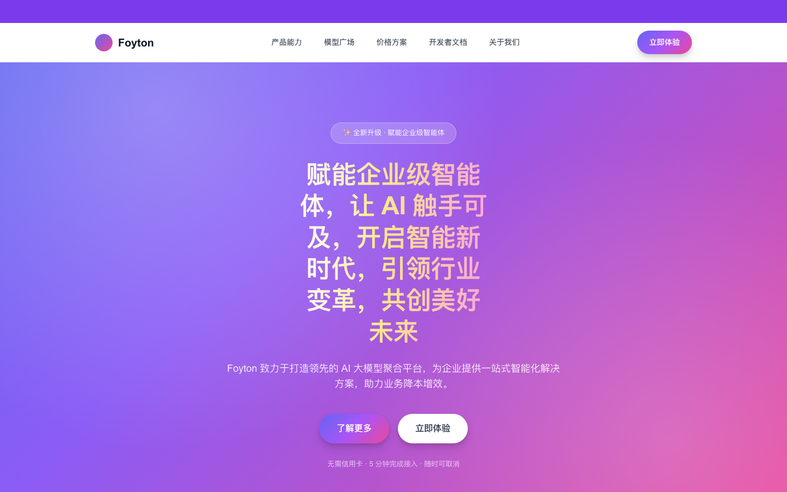

zack-design-router
总入口与冲突裁决
先判定任务类型（新建 / 改版 / 还原 / 评审），再决定加载哪个技能。并定义六级优先级：平台约束 > 品牌资产 > 项目设计系统 > 从需求推导的方向 > 通用规则 > 流行做法。高优先级出现时，低优先级直接作废。
8 个设计技能 · 60 条判断标准 · MIT
一套给 AI 编码工具用的设计技能包。把「一眼看出是模板生成」这件事， 拆成 60 条可以逐条检查、逐条修掉的规则——而不是一句没法执行的「设计好看点」。
里面有什么
上游那些设计技能最大的毛病是互相打架——同一件事，一个说必须做，一个说绝对禁止。 装三个等于没装。这套东西额外给出了一条冲突裁决顺序。
zack-design-router
先判定任务类型（新建 / 改版 / 还原 / 评审），再决定加载哪个技能。并定义六级优先级：平台约束 > 品牌资产 > 项目设计系统 > 从需求推导的方向 > 通用规则 > 流行做法。高优先级出现时，低优先级直接作废。
zack-anti-ai-look
旗舰技能。60 条清单、P0/P1/P2 分级、修复优先级、三段前后对照，附文案重写与状态设计两份深挖。
zack-hero-and-pricing
决定转化的两屏。首屏的 7 种形式选择、标题行数约束、CTA 层级；价格三档结构、锚定、真实对比表。
zack-typography-and-color
比例字号阶梯、流体字号公式、负字距规则、6 级中性色阶、阴影配方，以及一份中文排版细则。
zack-layout-and-rhythm
间距尺度、垂直节奏的疏密设计、bento 无空洞排版、10 种版式形式库、叠压在什么宽度必须取消。
zack-motion-taste
默认答案是「不动」。四个必答问题、时长与缓动对照表、打断处理、性能预算、reduced-motion 降级。
zack-figma-to-code
MCP 取数顺序、令牌与设计稿冲突时谁赢、项目约定翻译、用 Playwright 量而不是用眼睛估。
zack-redesign-audit
定范围 → 扫描 → 诊断表 → 最小化修复 → 三宽度验收 → 交付报告，含只读评审模式和客户诊断话术。
看效果
同一份文案、同样的价格和 SLA，两份文件。左边是 AI 生成的平均水平，右边是按这套规则重写的版本。 差别不在审美，在有没有做决定。

三条修法
加更多动效和渐变，只会得到花哨的 AI 味。真正的修法是删掉默认值，让每一个留存的元素都有理由。
平均值之所以是平均值，因为处处等量。制造不等量：大小、疏密、轻重。每一屏同样的留白就是没有层级。
每个选择都要能回答「为什么是这个值，不是别的」。答不上来就是默认值，而默认值就是 AI 味。
空话是最便宜、也最容易修的 AI 味信号，所以永远排第一。改文案不动设计，收益却最大。
判断标准
这套东西的价值不在于「提到要注意排版」，在于给出可检查的阈值。
| 判断项 | 具体数字 |
|---|---|
| 首屏标题在 1440px 下最多几行 | 2 行 |
| 一页允许几个字号的强调色 | 1 个 |
| 字号阶梯 | 比例，不是等差 |
| 区块间距 ÷ 组内间距 | ≥ 3 |
| 阴影总透明度 | < 0.12 |
| 微反馈动效时长 | 80–140ms |
| 退出动画相对进入 | 快 30–50% |
| 好改版的净行数 | 通常是负的 |
安装
没有依赖、没有 API key、不需要构建。克隆下来把技能目录软链到你工具的 skills 目录即可。
git clone https://github.com/yckonnnnn/zack-design-skills.git ~/.claude/skills/zack-design-skills
cd ~/.claude/skills/zack-design-skills/skills
for d in */; do ln -sfn "$PWD/${d%/}" ~/.claude/skills/"${d%/}"; done
Cursor 把 skills/* 复制到
~/.cursor/skills/，
Codex 复制到 ~/.codex/skills/。
装完说一句「帮我看看我这个网站为什么看起来像 AI 做的」就生效了。